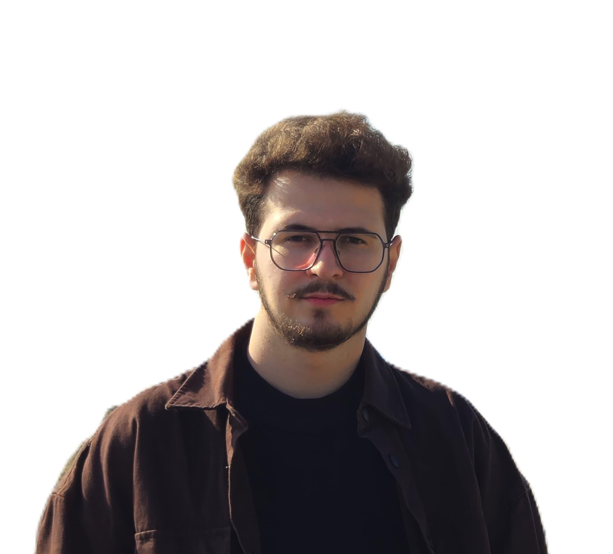
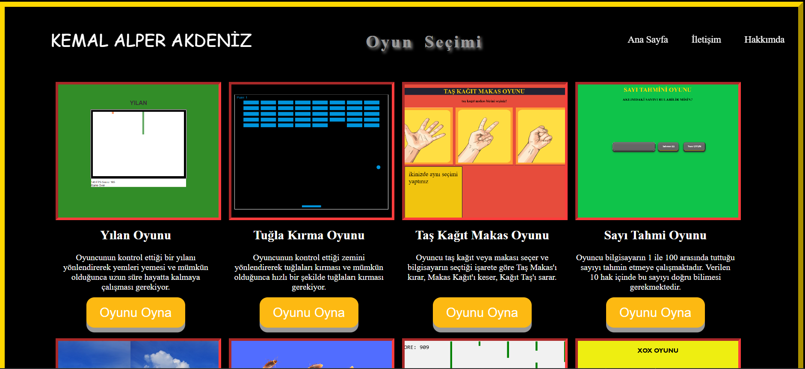
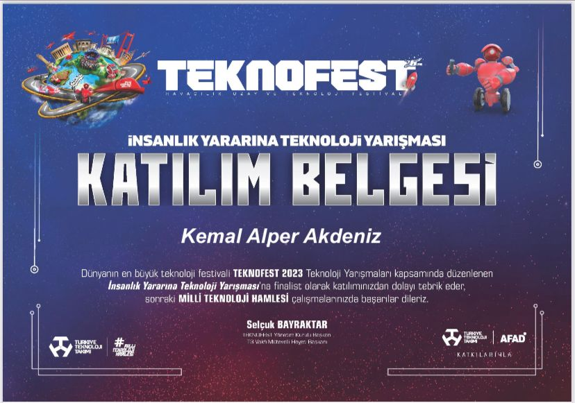

Ön yüzFront end
HTML, CSS, JavaScript, React, Bootstrap, duyarlı arayüz, UI/UXresponsive UI, UI/UX
npm run dev
Front-end geliştiriciFront-end developer
Kayseri’deyim. Akdeniz Technology benim şirketim; yazılımı orada çıkarıyorum. EKİPLEŞ, Servis Pusulası ve Fatih Bulut’un sitesi bu masadan geçti. Arayüzü süs diye görmüyorum. İnsanın işini bitirdiği ekranı kuruyorum. I live in Kayseri. Akdeniz Technology is my company, and I build the software there. EKİPLEŞ, Servis Pusulası and Fatih Bulut’s site came off this desk. I don’t treat the interface as decoration. I build the screen where someone finishes a job.

01
src/hikaye.tsx
Kayseri’de yaşıyorum. Mersin Üniversitesi’nde Bilişim Sistemleri ve Teknolojileri okudum. Anadolu Üniversitesi’nde Bilgisayar Programcılığı ön lisansını bitirdim. İki okulu da 2026’da tamamladım. Aynı yıl yapay zeka destekli programlama eğitimine devam etmekteyim.
I live in Kayseri. I studied Information Systems and Technologies at Mersin University. I finished an associate degree in Computer Programming at Anadolu University. I completed both in 2026. This year I am continuing a course in AI-assisted programming.
Akdeniz Technology benim şirketim. Yazılımı orada, kendi masamda çıkarmaktayım. EKİPLEŞ’i, Servis Pusulası’nı ve Fatih Bulut’un resmi sitesini bu çatı altında yaptım. Arayüzü süs diye görmedim. İnsanın işini bitirdiği ekranı kurdum ve kurmaktayım.
Akdeniz Technology is my company. I am building the software there, at my own desk. I made EKİPLEŞ, Servis Pusulası and Fatih Bulut’s official site under that roof. I never treated the interface as decoration. I built the screen where a person finishes a job, and I am still building it.
Kodluyoruz’da hem öğrenci oldum hem gönüllülük ettim. Hi-Kod front-end atölyesinde insan hakları sitesini ekip arkadaşlarımla bitirdik. Eğitmenimiz Sena Durmuş’tu. Yapay zeka atölyesine de katıldım. Deneyap’ta jüri koltuğuna oturdum ve gençlerin getirdiği işleri değerlendirdim.
At Kodluyoruz I was a student and I also volunteered. In the Hi-Kod front-end workshop we finished the human-rights site with my teammates. Our instructor was Sena Durmuş. I joined the artificial-intelligence workshop as well. I sat on the Deneyap jury and reviewed the work young people brought in.
TEKNOFEST’te 2023’te İstanbul’da, 2024’te Antalya’da yarışmacı olarak yer aldım. 2026’da festivalde VIP gönüllüsü olarak görev aldım. Mersin Teknopark’taki MIOTE’da, 22 Haziran ile 17 Ağustos 2026 arasında, elektrikli ekipmanlarda arıza ve anomali tespiti yapan ekipte staj yaptım. Kasım 2025’te İŞKUR Gençlik Programı kapsamında Mersin Üniversitesi’nde görev aldım.
I competed at TEKNOFEST in Istanbul in 2023 and in Antalya in 2024. In 2026 I served as a VIP volunteer at the festival. Between 22 June and 17 August 2026 I interned at MIOTE in Mersin Technopark, with a team that detects faults and anomalies in electrical equipment. In November 2025 I took part in the İŞKUR Youth Program at Mersin University.
Bilişim Portal’ı açtım ve bir süre yayında tuttum. Sözlüğü, rehberleri ve yazıları aynı çatıda topladım. Medium’da da yazmaktayım. Android’i, iOS’u ve teknik terimleri günlük dille anlattım. İngilizcem orta düzeyde. Yazılarımı Türkçe kuruyorum. Arayüzü ise iki dilde de okunur tutuyorum.
I opened Bilişim Portal and kept it live for a while. I gathered the dictionary, the guides and the essays under one roof. I am also writing on Medium. I explained Android, iOS and the technical terms in everyday language. My English is intermediate. I write in Turkish. I keep the interface readable in both languages.
Webin ve veritabanının yanında görüntüyle de çalıştım. Göğüs röntgeninden zatürre ayıran bir model eğittim. Kan yaymasında alyuvarı, akyuvarı ve trombositi sayan bir model kurdum. Kameranın önündeki işaret dilini okuyan bir iş yaptım. Taqkey adında, NFC ile not taşıyan bir anahtarlık yaptım ve yanına yolunu hatırlayan bir tabanlık ekledim. İHA-1 belgesini aldım. Boş zamanımda logo ve afiş çiziyorum. Sinema izliyorum, kitap okuyorum, müzik dinliyorum ve spor yapıyorum.
Beside the web and databases I also worked with images. I trained a model that tells pneumonia from a chest X-ray. I built a model that counts red cells, white cells and platelets in a blood smear. I made a piece that reads sign language in front of a camera. I made a key fob called Taqkey that carries a note by NFC, and I added an insole that remembers the path. I received the IHA-1 certificate. In my spare time I draw logos and posters. I watch films, read books, listen to music and play sport.
HTML, CSS, JavaScript, React, Bootstrap, duyarlı arayüz, UI/UXresponsive UI, UI/UX
Python, C#, SQL, Git
PyTorch, CNN, Arduino, ESP32, ESP8266
Photoshop, logo, afiş, proje anlatımılogos, posters, project storytelling
Bilişim Sistemleri ve TeknolojileriInformation Systems and Technologies
Bilgisayar Programcılığı, ön lisansComputer Programming, associate degree
Devam ediyorIn progress
SayısalScience track
02
src/isler.tsx
Doğru insanı kaydırarak buluyorsun. Davet kabul edilmeden oda açılmıyor. Kabul edilince sohbet, kanban ve pomodoro aynı masada.
Bir iş bitmeden diğeri başlamıyor. Kaydırma, oda ve bu kilidi 2026’da, Akdeniz Technology altında, baştan sona ben kurdum.
You find the right person with a swipe. The room stays closed until the invite is accepted. Then chat, a board and a pomodoro share the same table.
The next job waits until this one is done. I built the swipe, the room and that lock in 2026, under Akdeniz Technology, from end to end.
Servisteki dağınık defteri tek ekrana topladım. Plaka, ruhsat, hatırlatma ve sesli not aynı kartın içinde kalıyor.
Usta telefondan da açabiliyor. Akdeniz Technology olarak aylarca bunun üzerinde durdum ve yayına aldım.
I pulled the workshop notebook onto one screen. The plate, the registration, the reminder and the voice note stay on the same card.
The mechanic can open it from a phone. I stayed with this for months at Akdeniz Technology, then put it live.
Fatih Bulut’un resmi sitesini kurdum. Şarkılar, hikâye ve konser talebi ayrı kapılara dağılmıyor; aynı sakin sayfada duruyor.
Sanatçının dijital yüzünü Akdeniz Technology çatısında, baştan sona ben çizdim.
I built Fatih Bulut’s official site. The songs, the story and the concert request do not scatter into separate doors. They share one quiet page.
I drew the artist’s digital face from start to finish, under Akdeniz Technology.
Atatürk’ün hayatını ve bıraktığını bir anma sayfasına taşıdım. Kronoloji duruyor. 10 Kasım’da saygı duruşu var, mum yakılabiliyor, Anıtkabir turu da sayfanın içinde.
Bilgiyi duvara asmak yetmedi. Ziyaret eden insanın orada biraz kalmasını istedim.
I carried Atatürk’s life and what he left behind into a memorial page. The chronology is there. On 10 November there is a silence, a candle can be lit, and the Anıtkabir tour lives inside the page.
Pinning facts to a wall was not enough. I wanted the person who arrives to stay a while.
Sempozyumun sitesini Ömer Faruk Yalçınkaya ile kurduk. Program, konuşmacılar ve kayıt ayrı yerlere kaçmasın diye tek akışta duruyor.
Hocamız Hüseyin Yanık yol gösterdi. İnsan gelip gününü kaybetmeden salonu, saati ve kaydı görebilsin istedik.
Ömer Faruk Yalçınkaya and I built the symposium site. The programme, the speakers and registration stay in one flow so they do not slip into separate places.
Our lecturer Hüseyin Yanık guided us. We wanted a person to see the hall, the hour and the registration without losing the day.
Teknolojiyi sade anlatmak için açtığım yer. Harf harf bir bilişim sözlüğü, yeni başlayan için rehber ve kendi yazdığım yazılar aynı çatıda.
Site bir süre yayındaydı. Aynı dili Medium’da da sürdürdüm: Android, iOS ve terimler, günlük cümleyle.
A place I opened so technology could be told plainly. A dictionary, letter by letter, guides for someone just starting, and essays I wrote myself, under one roof.
The site was live for a while. I kept the same voice on Medium: Android, iOS and the terms, in everyday sentences.
// bilişim sözlüğü
type Terim = { ad: string; tanim: string }
const cekirdek: Terim = {
ad: "çekirdek",
tanim: "Donanımın üstündeki ilk katman."
}
yayinla(cekirdek)03
src/yol.ts
Kayseri’den web ve yazılım çıkaran şirketim. Fikir masaya geliyor, ekran buradan çıkıyor. EKİPLEŞ, Servis Pusulası ve sanatçı siteleri bu çatının altından geçti. Ben de o masanın yazılım tarafındayım.
My company, shipping web and software from Kayseri. An idea lands on the table and a screen leaves from here. EKİPLEŞ, Servis Pusulası and the artist sites came out from under this roof. I sit on the software side of that table.
Topluluğun sitesini bu yıl kurduk. Akıl, bilim ve çağdaşlık çizgisi, galeri, vefa sayfası ve günün sözü adt.mersin.edu.tr adresinde duruyor.
We built the society’s site this year. The line of reason, science and modernity, the gallery, the remembrance page and the quote of the day live at adt.mersin.edu.tr.
İHA-1 belgesini aldım. Ekranın yanında, havada da bir yetkim olsun istedim.
I hold the IHA-1 certificate. I wanted a licence in the air, beside the screen.
Atölyede öğrenci olarak da durdum, gönüllü olarak da. Hi-Kod’da insan hakları sitesini ekiple çıkardık. Eğitmenimiz Sena Durmuş’tu. Yapay zeka atölyesinden de geçtim.
I was a student in the workshop, and a volunteer too. In Hi-Kod we shipped the human-rights site as a team. Our instructor was Sena Durmuş. I also went through the artificial-intelligence workshop.
Deneyap’ta jüri koltuğuna oturdum. Gençlerin getirdiği işi dinledim, baktım, değerlendirdim.
I sat on the Deneyap jury. I listened to the work young people brought, looked at it, and judged it.
Kaydırma, oda ve tek iş kuralını baştan sona ben kurdum.
I built the swipe, the room and the one-job rule from end to end.
Elektrikli ekipmanlarda arıza ve anomali tespiti üzerine çalışan ekipte staj yaptım.
Internship with a team that detects faults and anomalies in electrical equipment.
2026 festivalinde VIP gönüllüsü olarak görev aldım. 2023 ve 2024’te ise yarışmacıydım.
VIP volunteer at the 2026 festival. In 2023 and 2024 I was on the competing side.
İŞKUR Gençlik Programı kapsamında Mersin Üniversitesi’nde görev aldım.
I took part in the İŞKUR Youth Program at Mersin University.
Akıllı Ulaşım, İnsanlık Yararına Teknolojiler (afet yönetimi) ve Tarım Teknolojileri kategorilerinde takım üyesiydim.
Team member in Smart Transportation, Technology for Humanity (disaster management), and Agricultural Technologies.
İnsanlık Yararına Teknolojiler kapsamında sağlık ve ilkyardım alanında proje geliştirdik.
We built a project in health and first aid under Technology for Humanity.
04
src/calismalar.ts

Küçük oyunlarSmall games
TEKNOFESTMersin Üniversitesi Atatürkçü Düşünce Topluluğu’nun sitesini bu yıl kurduk. Kapıda akıl, bilim ve çağdaşlık duruyor. İçeride topluluğu tanıtan sayfa, galeri, vefa sayfası ve her gün değişen bir Atatürk sözü var.
Üniversitenin kendi adresinde yayında: gelen insan kaybolmadan topluluğu, görselleri ve sözü aynı yerde bulsun istedim.
We built the site of Mersin University’s Atatürkist Thought Society this year. Reason, science and modernity stand at the door. Inside there is a page that introduces the society, a gallery, a remembrance page and an Atatürk quote that changes each day.
It is live on the university’s own address. I wanted a visitor to find the society, the pictures and the quote without getting lost.
İşletmenin siparişi kâğıtta kaybolmasın diye kurduğum panel. Kasa, yönetici ve garson aynı sisteme giriyor; her biri kendi ekranını görüyor.
Masa doluyor, sipariş düşüyor, telefondan da açılıyor. İnternet üzerinden çalışıyor, aynı Wi-Fi şart değil.
A panel I built so a business’s orders would not get lost on paper. The till, the manager and the waiter sign into the same system, and each one sees their own screen.
A table fills, an order lands, and it opens from a phone. It runs over the internet. The same Wi-Fi is not required.
Franchise şubelerini merkezden denetlemek için kurduğum yer. Merkez denetim formunu yazıyor: evet hayır, puan, yazı ve fotoğraf. Formu şubeye atıyor.
Şube telefondan dolduruyor. Merkez skoru, geciken denetimi ve şubeden gelen arıza talebini aynı ekranda görüyor. Kimin nereyi göreceği role bağlı.
A place I built so franchise branches could be audited from the centre. Headquarters writes the audit form: yes or no, a score, text and a photo. Then it assigns the form to a branch.
The branch fills it from a phone. Headquarters sees the score, the overdue audit and the fault ticket from the branch on one screen. Who sees what depends on the role.
Kameranın önündeki eli okuyan bir görüntü işi. Model, harfi gri ve küçük bir kareye indirip tanıyor. A’dan Z’ye kadar işaret, eşiği geçince ekrana yazılıyor.
Elin kadrajda durması yetiyor. Konuşmadan bir harf bırakmak için kurdum.
An image project that reads the hand in front of the camera. The model shrinks the letter into a small grey square and recognises it. Signs from A to Z are written on the screen once they pass the threshold.
The hand only has to stay in the frame. I built it so a letter could be left without speaking.
Şikayetini anlatıyorsun. MedDil, öğrendiği bilgilerle seni o hastanenin ilgili bölümüne bırakıyor. Neren ağrıyor, neyin var; cümle doğru kapıya gidiyor.
İnsan tıp teriminin içinde kaybolmasın diye kurdum. Yön tarif, teşhis değil.
You describe what is wrong. MedDil uses what it has learned and leaves you at the right department of that hospital. Where it hurts, what you have: the sentence goes to the right door.
I built it so a person would not get lost inside a medical term. It is a direction, not a diagnosis.
Kan yaymasının fotoğrafını alıp alyuvarı, akyuvarı ve trombositi ayrı ayrı sayan bir model eğittim. Kutu hücrenin üstüne oturuyor, sayaç yanda birikiyor.
Fotoğrafı sayfaya bırakıyorsun. Model bakıyor, işaretliyor, sayıyor. Gözün tek tek saymakta yorulduğu yeri ekrana verdim.
I trained a model that takes a photo of a blood smear and counts red cells, white cells and platelets separately. A box sits on the cell, and the counter adds up beside it.
You leave the photo on the page. The model looks, marks and counts. I gave the screen the job that tires the eye when it counts one by one.
Acil durumda kimin neye ihtiyacı varsa, ona uygun yardımı buluşturan bir yer. Gıda, ilaç, giyim, barınma ayrı duruyor. İstek haritada ve listede görünüyor. Yardım etmek isteyen de aynı kapıdan giriyor.
Türkçe, İngilizce ve Arapça. Arama, bildirim ve sayı da orada. Genel bir “yardım edin” bağırışı değil; ihtiyacın kendisi adresi oluyor.
A place that matches help to whatever a person needs in an emergency. Food, medicine, clothing and shelter stay separate. The request shows on the map and in the list. Someone who wants to help comes through the same door.
Turkish, English and Arabic. Search, notifications and the numbers are there too. It is not a general shout of “please help”. The need itself becomes the address.
Patronun borcunu, alacağını, kasasını ve stoğunu tek yerden gördüğü iş paneli. Mali müşavir programı değil. Alım fişi stoğu ve tedarikçi borcunu birlikte oynatıyor. Satış fişi stoğu ve kasayı, ya da alacağı, birlikte oynatıyor.
Windows’ta masanın üstünde duruyor, telefona da iniyor. Yedek alınıyor, Excel’e dökülebiliyor. Servis Pusulası’na açılan bir kapı da bıraktım.
A work panel where the owner sees debt, receivables, the till and the stock in one place. It is not an accountant’s suite. A purchase slip moves stock and the supplier’s debt together. A sale slip moves stock and the till, or the receivable, together.
It sits on the Windows desk and also comes down to the phone. Backups can be taken, and it can be poured into Excel. I also left a door toward Servis Pusulası.
PDF’yi bırakıyorsun. Sor AI metnin içinden soru çıkarıyor ve sana geri veriyor. Seçenekli sorular metindeki bilgiye yaslanıyor. İstersen sorular yeniden bir belgeye de dökülüyor.
Uzun bir dosyayı okuyup “buradan ne sorulur” diye düşünen tarafı ben kurdum. Çalışan da sorabiliyor, dosya da konuşabiliyor.
You leave a PDF. Sor AI pulls questions out of the text and hands them back. The multiple-choice questions lean on what the document actually says. If you want, the questions are poured into a document again.
I built the side that reads a long file and asks what could be questioned from it. A person can ask, and the file can answer.
Kulübün tarihçesi, kadrosu, kupaları, galerisi ve haberleri tek sayfada. Taraftarın kaydırırken kulübü baştan sona gezmesi için kurdum.
Sakin bir kart değil. Sayfa hareket ediyor, kadro ve kupa aynı nefeste duruyor.
The club’s history, squad, trophies, gallery and news on one page. I built it so a supporter could walk the club from start to finish while scrolling.
It is not a quiet card. The page moves, and the squad and the trophies share the same breath.
Türkçe Vikipedi’de bir maddeden diğerine yarışıyorsun. Yolun kendisi skor oluyor.
Bilgi biraz oyun olsun diye kurdum. Doğru bağlantıyı bulan, maddeyi de okumuş oluyor.
You race from one Turkish Wikipedia article to the next. The path itself becomes the score.
I built it so knowledge could feel like a game. Whoever finds the right link has also read the article.
Göğüs röntgenine bakıp zatürreyi ayırt etsin diye bir model eğittim. Sıfırdan değil; daha önce öğrenmiş bir modeli devralıp bu işe çevirdim.
Film geliyor, model bakıyor, zatürre var mı diye cevap veriyor.
I trained a model to tell pneumonia from a chest X-ray. Not from nothing: I took a model that had already learned and turned it to this job.
The film arrives, the model looks, and it answers whether pneumonia is there.
Bir bakım ne kadar aceledir, bulanık mantıkla söyleyen bir rehber. Aşınma ve kullanım süresi katı bir çizgiye vurulmuyor; insan gibi, bir arada tartılıyor.
Sonuç bir skor. Usta “bu bugün mü, haftaya mı” diye bakabilsin diye kurdum.
A guide that says how urgent a repair is, using fuzzy logic. Wear and hours of use are not forced onto a hard line. They are weighed together, the way a person would.
The result is a score. I built it so a mechanic could see whether this is today or next week.
Araçların bakımını defterden çıkarıp ekrana aldım.
I took vehicle maintenance off the paper log and put it on a screen.
Bir parolanın ne kadar sağlam durduğunu söyleyen küçük bir araç.
A small tool that tells you how strong a password really is.
NFC ile bilgi taşıyan bir anahtarlık ve yolunu hatırlayan bir tabanlık yaptım.
I made a key fob that carries a note by NFC, and an insole that remembers the path.
Hakları günlük dile indiren bir site. Okuyan insan sıkılmadan kalsın istedim.
A site that puts rights into everyday language. I wanted people to stay with it.
Bir ağaç dikimine ekrandan katılmak için kurduğumuz yer. Doğa da orada anlatılıyor.
A place we built so you could join a real tree planting from the screen. Nature is taught there too.
Esnafın “kim ne kadar borçlu” sorusunu tek listede tuttum.
I kept a small shop’s “who owes what” in one list.
Mersin’deki bilişim topluluğunun etkinliğini ve insanını anlatan site.
A site for the informatics club in Mersin: their events and their people.
Kelime çalışırken sıkılmayayım diye kurduğum pratik.
A practice I built so studying words would not feel like a chore.
Boş bir akşamda tarayıcıya sığdırdığım kısa oyunlar.
Short games I fit into the browser on a quiet evening.
Radyolojiyi ekranda gezilebilir hale getirmek için kurduğum simülasyon.
A simulation I built so radiology could be walked through on a screen.
Bir fotoğrafın ışığını eşitleyip gerdirerek yan yana koydum.
I equalized a photograph’s light, stretched it, and set the two side by side.
İki ayrı model. Biri ALS, biri Alzheimer için baktı.
Two models. One looked for ALS, the other for Alzheimer.
Blockchain’i ilk kez duyan birine anlatır gibi yazdım.
I wrote blockchain the way I would tell it to someone hearing it for the first time.
Öğrenirken tuttuğum sayfalar. Git, GitHub, Bootstrap ve biyoinformatik.
Pages I kept while learning. Git, GitHub, Bootstrap and bioinformatics.
Bu başlıkta bir iş yok. Nothing under this heading.
05
src/belgeler.json
06
src/iletisim.tsx
Bir iş, bir fikir ya da sadece merhaba. A job, an idea, or just hello.